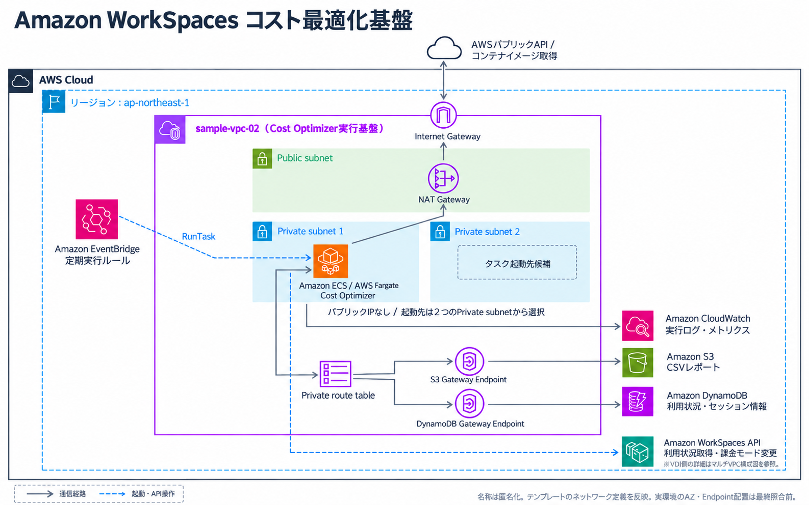

特定のお客様の案件を2年2か月にわたり継続して担当し、先任エンジニアと私の2名が主担当として、AWS基盤の構築・運用を支援してきました。お客様の要件と既存環境を確認したうえで、構築・設定変更から試験、運用改善まで対応しています。
定例会では構成案や検証結果、作業の進捗を説明し、お客様と認識を合わせながら対応を進めました。また、設定書・構成図・運用資料を整備し、継続的な運用と引き継ぎに必要な情報をまとめています。
3.1 WorkSpacesによるVDI環境の導入
リモート開発用のVDI基盤を構築し、WorkSpacesの払い出しと運用に必要な設定を実施しました。
- 事前検証
- VPC Peering経由で、別VPCのAWS Managed Microsoft ADをAD Connectorから利用する認証連携を検証
- 担当内容
- WorkSpaces環境の構築・払い出し、ネットワーク・接続確認、ログ・監視設定
3.3 WorkSpacesの運用コスト最適化
Amazon WorkSpacesには、時間課金（月額の基本料金＋利用時間分の料金）と月額固定の2つの料金体系があり、利用状況に合った課金モードを選ぶ必要があります。
お客様から、以前のEC2による運用と比べて料金が高くなったことに加え、約50台の利用状況を把握し、毎月1台ずつ課金モードを見直すことが難しいとのご相談をいただきました。
そこで、利用時間と設定した閾値に応じて課金モードを自動で切り替える「Cost Optimizer for Amazon WorkSpaces」を検討しました。私が仕様と動作条件を確認し、検証環境で課金モードの判定・切り替えやレポート出力を確認したうえで、お客様環境への導入を支援しました。
出典：Cost Optimizer for Amazon WorkSpaces（AWS公式）
出典：WorkSpacesの課金に関するFAQ（AWS公式）

導入支援に加え、自動停止までの時間を短縮し、利用状況に合わせたコンピューティングタイプの変更も支援しました。また、当時の料金条件に基づいて課金切替閾値の見直し案を作成しました。
CloudWatchダッシュボードで動作と課金モードを確認し、料金推移をお客様へ報告しました。これらの取り組み後、月額利用料金は2025年12月から2026年2月にかけて6,840.33 USD（59.9％）減少しました。
WorkSpacesの月額利用料金の推移
| 項目 | 2025年12月 | 2026年1月 | 2026年2月 |
|---|
| WorkSpaces台数 | 未確認 | 49台 | 50台 |
|---|
| 月額利用料金（USD） | 11,417.72 | 8,976.10 | 4,577.39 |
|---|
| 前月比 | 比較基準 | 21.4％減 | 49.0％減 |
|---|
台数は、2026年1月30日の棚卸結果と2026年2月のダッシュボード掲載値です。2025年12月の台数は未確認です。
月額実績の比較であり、台数・利用時間・月の日数などの条件は同一ではありません。Cost Optimizerに加え、コンピューティングタイプと自動停止時間の見直しを含む複数施策後の推移です。
3.4 設計構築案件のドキュメント作成
2026年8～9月に、お客様からのご依頼を受け、専任案件のVDI環境に関する仕様書・構築手順書など、計18件のドキュメントを作成しました。
作成したドキュメントと主な内容
| No. | 文書名 | 記載内容 |
|---|
| 1 | AWS Managed Microsoft AD 構築手順書 | ドメインコントローラーの構成、AWSと利用者の管理範囲、サービスの制約事項を整理。ディレクトリタイプ・ドメイン情報・管理者パスワード・VPC・サブネットの指定から、作成内容の確認までを記載。 |
|---|
| 2 | AWS Directory Service ユーザー・グループ管理手順書 | 管理機能の有効化、ユーザーの新規作成、グループへの追加・削除、アカウント削除の手順を記載。パスワードポリシーの設定と、ユーザー・グループの状態およびポリシー適用結果の確認方法を整理。 |
|---|
| 3 | Amazon EC2 管理サーバー構築・Active Directory管理手順書 | 起動条件の確認、AWS CLIによる管理用EC2の起動、Fleet Manager経由の接続、ドメイン参加確認を記載。GPMCの起動とGPOの確認、接続異常時の切り分け、参照先ドメインコントローラーの変更、利用終了時の操作を整理。 |
|---|
| 4 | AD Connector サービスアカウント作成・権限委任手順書 | 専用グループとサービスアカウントの作成、グループへの追加、WorkSpaces用OUへの権限委任を記載。パスワード更新、認証エラー時の確認、アカウント切り替えと旧アカウントの無効化・削除手順を整理。 |
|---|
| 5 | Amazon VPC ピアリング接続・セキュリティグループ設定およびAD Connector構築手順書 | ピアリング接続の作成・承諾、双方のルート追加、ドメインコントローラー用SGの通信許可、経路・名前解決・疎通確認を記載。AD Connectorのサイズ、VPC・2サブネット、接続先AD情報の指定から作成までの手順を整理。 |
|---|
| 6 | Amazon WorkSpaces 構築・バンドル設定手順書 | AD Connectorの登録、ターゲットOUの確認、バンドル選択、WorkSpaceの作成、OU所属・クライアント接続の確認を記載。作業の実施順序と、問い合わせ・作成失敗・誤作成時の切り分けおよび対応方法を整理。 |
|---|
| 7 | Amazon WorkSpaces OU作成・権限委任・ターゲットOU設定手順書 | 管理端末と既存環境の確認、WorkSpaces用OUの作成、専用グループへの権限委任、ターゲットOUの指定を記載。新規WorkSpaceが指定OUに配置されたことの確認と、設定を切り戻す手順を整理。 |
|---|
| 8 | Amazon WorkSpaces グループポリシー作成・適用手順書 | DCV管理テンプレートの中央ストアへの配置、GPO作成、WorkSpaces OUへのリンク、設定反映・適用結果の確認を記載。検証用GPOでの管理操作、既定GPOのスコープ・継承の確認、設定の切り戻し手順を整理。 |
|---|
| 9 | Amazon WorkSpaces カスタムイメージ・バンドル作成および共有手順書 | 参照WorkSpaceの準備、Image Checkerの実行、カスタムイメージ・バンドルの作成と検証を記載。更新時の操作、ADグループによる展開対象管理、他アカウントへの共有・共有解除、切り戻し・削除手順を整理。 |
|---|
| 10 | AWS Systems Manager 環境構築手順書 | EC2用IAMロールの作成、既存のログ保存用S3バケットの利用、検証用Windows EC2の作成手順を記載。SSM Agentの状態とマネージドノードへの登録状況を確認し、Systems Managerで管理を開始するための条件を整理。 |
|---|
| 11 | AWS Systems Manager Patch Manager 設定手順書 | Windows用パッチベースラインの選定、Patch Groupとの関連付け、EC2への対象タグ付与を記載。Maintenance Windowの作成、ターゲットとRun Commandタスクの登録、任意のSNS通知設定を整理。 |
|---|
| 12 | AWS Systems Manager Patch Manager 実行・結果確認手順書 | 実行前チェック、Scan・Installテスト、実行ログと適用結果に基づく成功判定を記載。Systems Manager上の成功表示とWindows Update表示の違い、失敗時の対応、切り戻しと運用後の確認を整理。 |
|---|
| 13 | Cost Optimizer for Amazon WorkSpaces 仕様・構築手順書 | 課金モード判定の仕様と制約、CloudFormationテンプレート、ネットワーク・安全設定・料金閾値の指定を記載。スタック作成とデプロイ結果の確認に加え、利用バージョンの差分と作成リソースを整理。 |
|---|
| 14 | Cost Optimizer for Amazon WorkSpaces Dry Run解除・設定変更手順書 | 変更前のパラメータ確認、変更セットの作成・差分確認・実行、更新後の動作確認を記載。Dry Run解除、料金閾値変更時の注意点、ドリフト確認、設定の切り戻しと証跡の判定方法を整理。 |
|---|
| 15 | Cost Optimizer for Amazon WorkSpaces 実行スケジュール設定変更手順書 | EventBridgeの実行時刻に関する仕様、検証した時刻・最終状態、直接編集による変更記録を記載。ルールの再有効化と初回実行確認、例外的なカスタマイズとして変更する場合の方針、運用上の注意点を整理。 |
|---|
| 16 | Cost Optimizer for Amazon WorkSpaces レポート確認・監視運用手順書 | ECSタスクの実行結果、CloudWatchダッシュボード、S3レポートとCSVの主要列、CloudWatch Logsの確認方法を記載。対象台数と課金モードの変換結果を照合し、処理状況を判断するための確認項目を整理。 |
|---|
| 17 | Amazon CloudWatch EC2・Windows OS監視および通知設定手順書 | SNSトピックの作成、メール購読の登録・承認・配信テスト、EC2ステータスチェック・CPU使用率アラームの設定を記載。CloudWatch AgentによるWindows OSメトリクス収集と、監視・通知の設定に必要な権限や前提条件を整理。 |
|---|
| 18 | Amazon CloudWatch WorkSpaces監視設定手順書 | Unhealthy・ConnectionFailureアラームの作成、UserConnectedのダッシュボード追加、共通ダッシュボードの表示確認を記載。アラーム・通知の確認と、日常運用および障害発生時に確認する項目を整理。 |
|---|